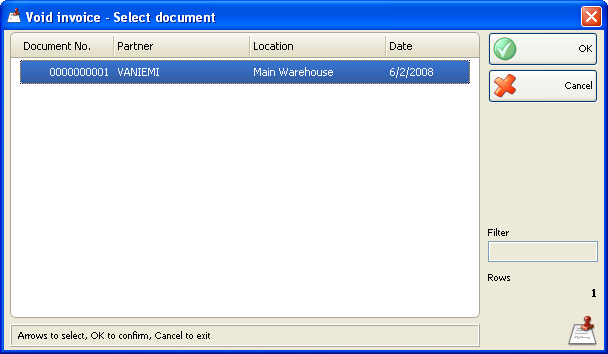

Anulare factura
Fereastra de Anulare factura (shortcut taste Alt+F7) contine lista tuturor facturilor de vanzare. Pentru a anula o factura, seleteati factura (documentul) din lista si click pe butonul OK. Click Cancel pentru iesire din fereastra fara a selecta factura.

Dup ace ati anulat o factura, se poate introduce a noua factura cu acelasi numar de la fereastra Issue invoice , cat si editarea unui document de vanzare in fereastra �Edit sale .
�2006-2012 Microinvest, All rights reserved